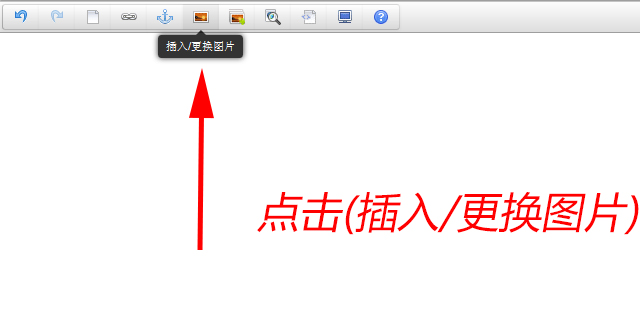
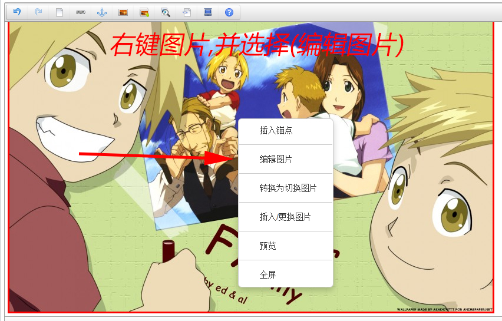
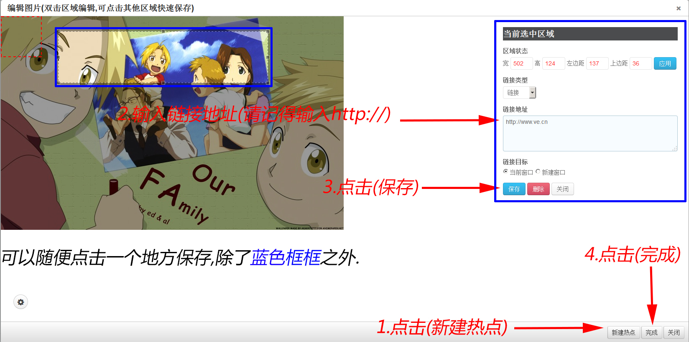
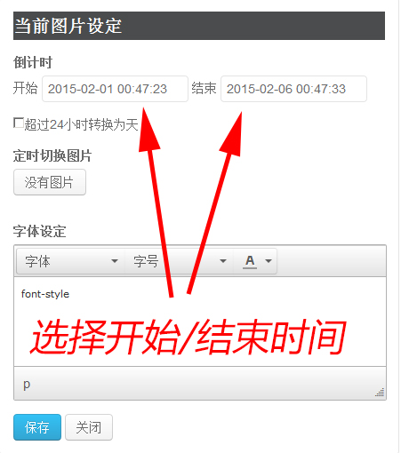
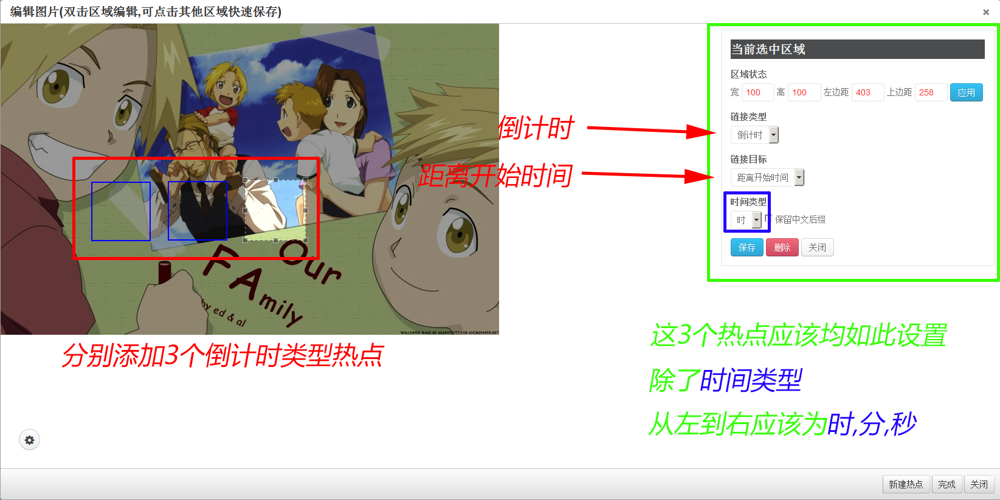
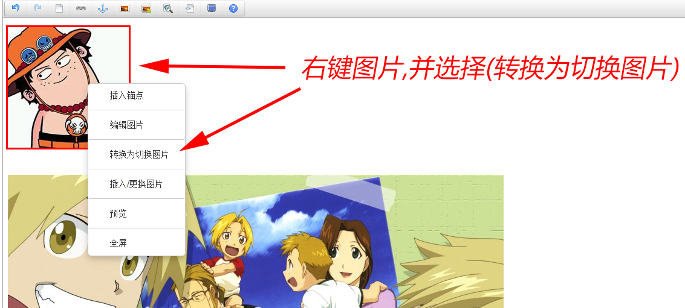
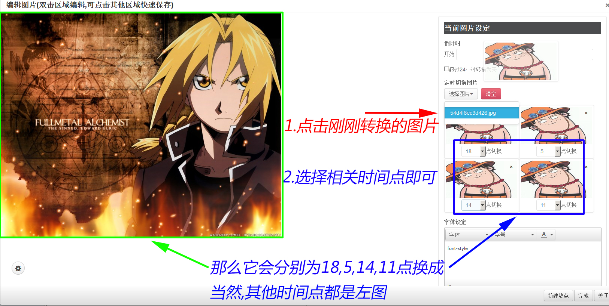
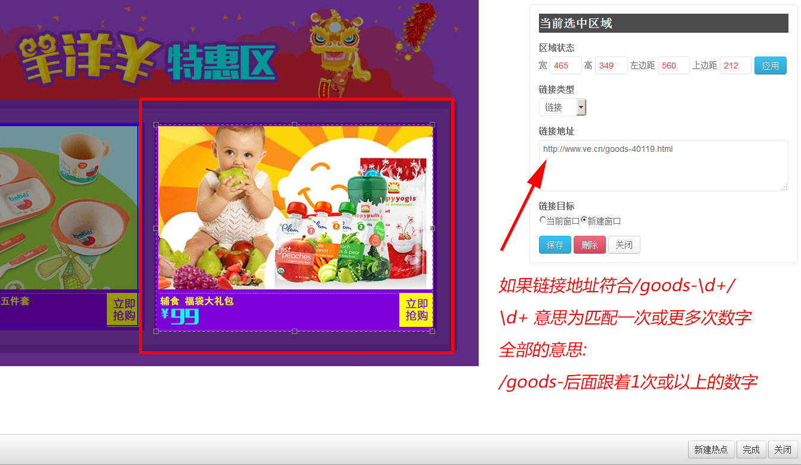

ccweditor
ve.cn活动专场图片编辑器
一个基于Tinymce上扩展的编辑器.它主要有以下特点
- 自定义复杂热点
- 定时切换图片
- 定义样式
如何在图片上画超链接热点



在图片上设定倒计时


如何定时切换图片


超链接"售罄"图标提示

更新日志
ccweditor 1.2.32 2015-3-6
- 修正了隐藏面板功能
- 新增了"编辑图片"操作提示
- 修正了脚本加载问题
- 修正转换MAP的正确性
- 修正A覆盖热点编辑的问题
ccweditor 1.2.27 2015-2-28
- 新增隐藏面板功能
- 新增双击图片编辑图片
- 优化了"编辑图片"功能
- 改进了加载编辑器时有可能不显示图片
- 改进了相关动作的前置验证
- 改进了"编辑图片"页面的布局
ccweditor 1.2.21 2015-2-26
- 修正一些bug
ccweditor 1.2.20 2015-2-25
- 更新售罄图片
- 修正某些情况的代码格式
ccweditor 1.2.18 2015-2-15
- 修正转换格式不正确时,编辑图片无蓝色框提示
ccweditor 1.2.17 2015-2-14
- 优化主调用文件
- 修正为RequireJS方式调用
ccweditor 1.2.16 2015-2-13
- 修正了当编辑图片页面其余空白区不能保存
- 优化模块结构
ccweditor 1.2.15 2015-2-12
- 支持之前编辑器所生成的map,area元素包括(倒计时,链接,锚点,按钮)转换为a元素,并且完全移除map,area元素
ccweditor 1.2.14 2015-2-11
- 重要修正:兼容旧编辑器的链接及锚点,当旧编辑器的内容载入时,自动转换为新编辑器的内容格式
- 修正了加载编辑器时给锚点加边框
- 新增预览及编辑图片时的loading动画提示
ccweditor 1.1.12 2015-2-9
- 新增"售罄"图标提示,当:热点为一个正确链接,将分析该地址,是否存在库存,存在则显示"售罄"图标
- 重要修正:生成的热点不在是map元素替换之a元素,除了倒计时类型会生成div,其余均为a
- 重要修正:在编辑器内,对热点元素只能回车/退格/Delete键,并回车会生成前后一个p,确保编辑的正确性
- 模块化部分代码,优化
- 优化热点所生成的代码,更简洁
- 当链接类型为链接并且没修改过,默认值是http://,并校验该地址
ccweditor 1.0.11 2015-2-7
- 修正了当图片很小的时候没有出现滚动条
ccweditor 1.0.10 2015-2-6 修正很重要!很严重的问题!
- 修正了对内容按退格键(删除)时,没有删除热点(蓝色框)
- 修正了插入锚点没有删除热点(蓝色框)
- 修正了插入图片/多图上传对当前激活编辑器的正确性
- 修正了在编辑器内对图片各种操作,可能会产生不正确的位置及内容
- 修正了(编辑图片页面)不会自适应宽高
- 优化了编辑器内容所产生的代码
- 关闭了编辑器内容可拖动热点,及改变图片大小
- 增加了这个当前文档在编辑器的工具栏上
ccweditor 1.0 2015-2-6 更早之前
- 第一个版本